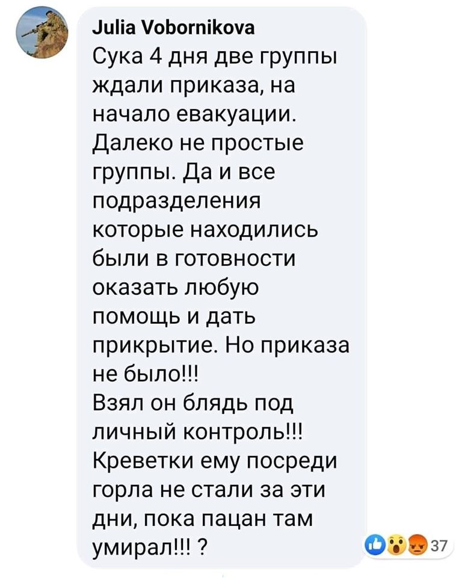

06.07.2020
Колишній голова Держкомтелерадіо часів Януковича займається інформполітикою в Офісі президента »»»
07.07.2020
Зеленський порушив закон: «забув» задекларувати понад 5 млн грн »»»
UPD: Зеленському виписали два адмінпротоколи »»»
UPD: Петиція за відставку Зеленського у зв'язку з порушенням ним закону зареєстрована на сайті Президента »»»
UPD: Петиція за відставку Зеленського набрала необхідну кількість голосів »»»
Нардеп від «Слуги народу» пропонує повернути «Роттердам+» »»»
Опа! А як же "бандітская схєма ограблєнія насєлєнія"???
UPD: Саакашвілі: Коли працював "Роттердам+", ціни на електроенергію були нижчі »»»
08.07.2020
"Харківські" на чолі з Венедіктовою тиснули на слідчих у справах Порошенка – керівник слідчої групи ДБР Корецький »»»
UPD: Слідчого Корецького, який заявив про вимоги керівництва ДБР закрити "Прямий" канал, звільнили з роботи »»»
12.07.2020
Пресслужба Зеленського назвала Волинську область Луцькою »»»
13.07.2020
ВР прийняла закон Юзіка про додатковий збір з кожного українця, що користується літаками »»»
Партія” Слуга народу ” почала випускати цукерки під власним брендом »»»
Слуги урода у своєму репертуарі, обмежені у розвитку дегенерати нічого не можуть придумати свого!
“Тєлєга” для Слуги. Як Телеграм-канали, що ймовірно ведуться з Росії, впливають на роботу Ради »»»
14.07.2020
В The Washington Post вийшла розгромна стаття: Реформи в Україні померли, а слово Зеленського нічого не значить »»»
СМИ опубликовали «темники» «Слуги народа», в партии говорят, что это «аналитика» »»»
Рада легалізувала гральний бізнес »»»
UPD: Гральний бізнес "у законі": як саме Рада легалізувала казино і автомати »»»
Суды отменили увольнение первого заместителя главы Нацбанка времен Януковича »»»
Поліції надали право зупиняти автомобілі без конкретної причини »»»
15.07.2020
Державне підприємство заявило, що у нього вкрали 32 баржі »»»
Що? І баржі теж миші з'їли?
16.07.2020
Головою Антимонопольного комітету України стала сестра сусідки Зеленського, на яку Зеленський переписав свій бізнес в Італії »»»
Ну не "корабельна сосна" але теж і "баба-да!", і повністю незалежна, незаангажована людина! Чи не так?
UPD: Термін “бариґа” при Зеленському заграв новими яскравими фарбами »»»
17.07.2020
З Фонду COVID-19 виділяють 41 млн гривень на аналізи та лікування Зеленського і оточення »»»
Особисті рахунки Баканова: СБУ взялось за колишнього бізнес-партнера очільника спецслужби »»»
Україна стала найбіднішою країною Європи »»»
Епоха бідності, кажете, закінчилася?
20.07.2020
КВНщик, шаріївець і шоумен - кандидати в мери Одеси, Харкова й Черкас від "Слуги народу" »»»
Show must go on!
«Слуга народу» Третьякова запропонувала легалізувати одностатеві шлюби і проституцію »»»
Колись цей потік свідомості від Третякової закінчиться?
21.07.2020
Мовчання президента. Як Зеленський ігнорує вбивства українських воїнів »»»

UPD: Побратими загиблих розвідників попросили викласти звернення і відео того, що відбулося:
Текст звернення під відео
UPD: Зеленський розпорядився відзняти ролик, щоб зняти з себе відповідальність за загибель бійця »»»
Той, хто брав "під особистий контроль" долю українського розвідника, тепер вважає, що за допомогою відосіка відчистить свою совість від злочину, який він допустив! 🤬 Ні, шмаркля, відосіки залиш в минулому- за все доведеться відповідати...
23.07.2020
Зеленський наказав створити базу даних військових, які брали участь у Революції гідності - навіщо? »»»
28.07.2020
Украинским медикам заблокировали повышение зарплаты »»»
Новий очільник ІМЗО працював в міністерстві Табачника та фігурував у розкраданні майна фонду соцстрахування »»»
29.07.2020
Зеленський, на відміну від європейських партнерів, не відреагував на будівництво військових суден в Криму »»»
Країна Йти та інші шедеври перекладу: як дії МОЗ створюють проблеми для України у світі »»»
Це не влада, це повна клоунада!
30.07.2020
Україна скасувала обсервацію для осіб, які прибули з окупованого Криму та ОРДЛО »»»
31.07.2020
Як кортеж Президента порушує Правила дорожнього руху »»»
В Україні дозволять ліквідовувати санаторні школи-інтернати: Зеленський підписав зміни до закону про освіту »»»
Украинцам урезали субсидии на 40% перед отопительным сезоном »»»
Ще не вмерла Україна? Нічо, почекаємо!
Президент подписал закон о компенсации “зеленого тарифа” за счет госбюджета »»»
"Зелену" електрику Ахметову тепер будуть компенсувати з наших кишень. Дякуємо! Дуже дякуємо!